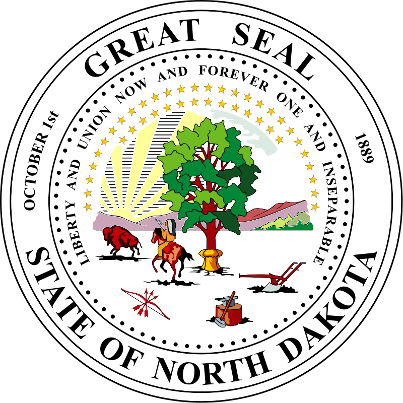

Shimoliy Dakota - Amerika Qoʻshma Shtatlardan biri. Poytaxti - Bismarck shahri. AQSh ittifogʻiga 21-noyabr 1789-yilda kirgan, undan oldin. AQShning shimolidagi shtat, Kanada bilan chegaradosh. Maydoni 183 ming km². Aholisi 634,1 ming kishi (2002). Maʼmuriy markazi — Bismark shahri Yer yuzasi tekislik, daryolari chuqur vodiylardan oqadi. Yanvarning oʻrtacha temperaturasi —19° dan —22° gacha, iyulniki 20—23°. Yillik yogʻin 400– 500 mm. Asosiy daryosi — Missuri (yuqori oqimi). Iqtisodiyotining yetakchi tarmogʻi — qishloq xoʻjaligi Asosiy ekini — bugʻdoy, yalpi hosili boʻyicha mamlakatda yetakchi oʻrinlardan birini egallaydi. Shuningdek, suli, arpa, javdar, makkajoʻxori, zigʻir, oʻt ekiladi. Goʻsht chorvachiligi rivojlangan. Qoramol, qoʻy, choʻchqa boqiladi. Sanoatida yetakchi tarmoq — oziqovqat sanoati. Foydali qazilmalardan neft, gazeta va qoʻngʻir koʻmir qazib olinadi.[1]
